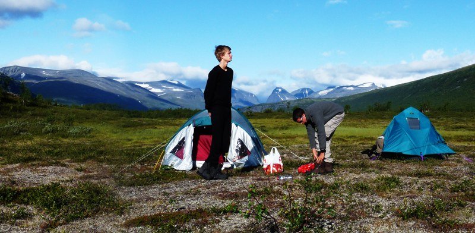

Fjällvandring i Kebnekaiseområdet
Kebnekaise
Guiden, berättelsen och bilderna från fyra gymnasisters första möte med fjällen – och allt vi lärde oss på vägen.
- Nordtoppen
- 2 096,8 m
- Nikkaluokta–fjällstationen
- 20 km
- Kiruna tur och retur
- 8 dagar

Tältläger nedanför Kebnekaise-massivet, augusti 2009.
Planera turen
Allt vi önskade att vi visste innan
Från bussbiljetten i Kiruna till packlistan i tältet. Här är guiden vi själva hade velat ha när vi planerade vår första fjällvandring.
Bestigning
Västra eller östra leden? Så tar du dig till toppen och vad som krävs.
Vandringsleder
Dagsturer, Vistasvagge och vägen runt hela massivet.
Utrustning & kläder
Det som faktiskt behövdes – och det vi kunde lämnat hemma.
Packlista
En beprövad lista för en vecka i fjällen, från tält till skoskavsplåster.
Vår färd
Åtta dagar, två tält och en topp
Dagboken från augusti 2009: förseningar, regn, tunga ryggsäckar och en vy från toppen som gjorde allt värt det.

Dag 1
Avfärd och första tältnatten
Försenat flyg, snabb shopping i Kiruna och ett första läger vid sjön.

Dag 2
Mot fjällstationen
Fyra timmars vandring, renar vid tältet och väckning klockan fyra.

Dag 3
Sydtoppen
7,5 timmar uppför Kittelbäcken, Vierramvare och Kaffedalen.

Dag 4
Vilodag på fjällstationen
Kortspel, pasta och renhäng – och en klocka som springer iväg.

Dag 5
Tillbaka i regnet
Nio kilometer i ösregn, blöta kläder och en efterlängtad brasa.

Dag 6
Sista etappen till Nikkaluokta
Tidig morgon, kall dusch och buss till Kiruna – och pizza.

Dag 7
Kiruna från ovan
Skidbacken, kyrkan som var stängd och ett eget chillrum.

Dag 8
Hemresa
Sista morgonen, flygbussen och en sista bild innan hemfärd.
Just nu
Läget i fjällen
Kika in mot fjällstationen och kolla prognosen innan du packar ryggsäcken.
Webbkamera · Kebnekaise fjällstation
Live
Kameran är inte tillgänglig just nu. Prova igen om en stund.
Väder i fjällen
Fjällvädret skiftar snabbt. Kolla prognosen för dalgången och toppen innan du går upp.
Prognoserna öppnas hos yr.no. Ta alltid med vind- och regnskydd, även om solen skiner hemma.

Om projektet
Fyra grabbar, ett projektarbete och en dröm om fjällen
Våren 2009 bestämde vi oss för att bestiga Kebnekaise som en del av vårt projektarbete i skolan. Vi hade ingen tidigare erfarenhet av fjällvandring – bara ett tält, en handledare och en ganska optimistisk plan.
I augusti gick vi från Nikkaluokta till fjällstationen, upp på sydtoppen och hela vägen tillbaka. Den här sidan är vårt sätt att dela med oss av vad vi lärde oss.
Läs hela berättelsenDen ursprungliga sidan finns kvar
Sidan från 2010 är bevarad i sin helhet – med tidningsklipp, gamla väderwidgetar och allt annat.